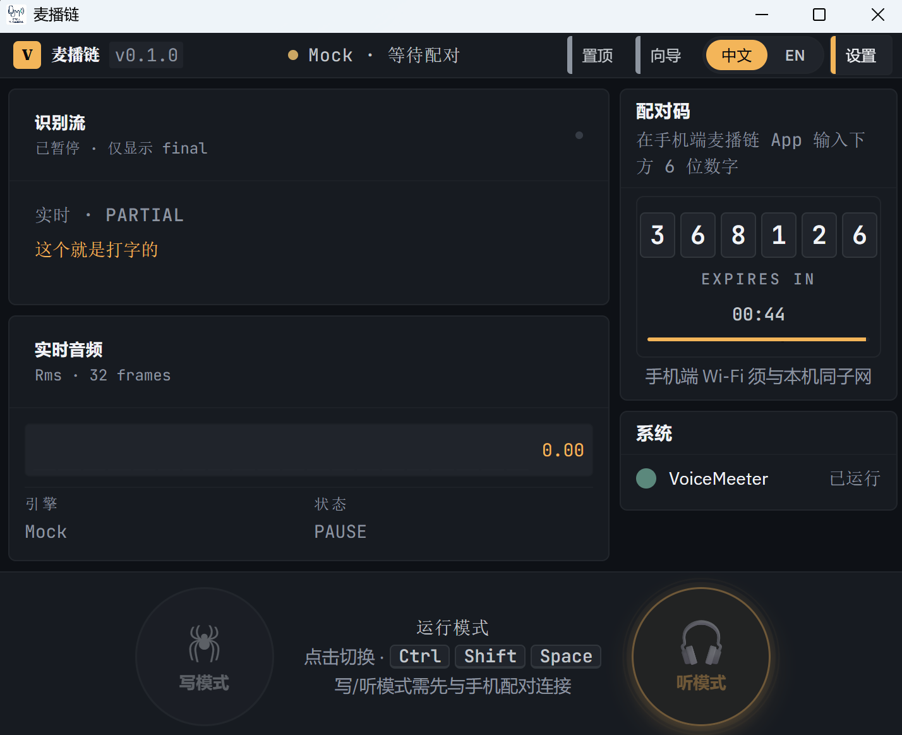
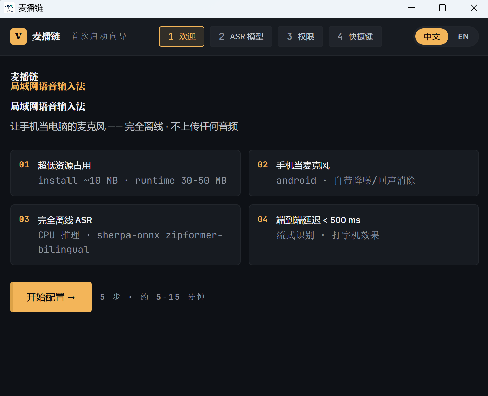
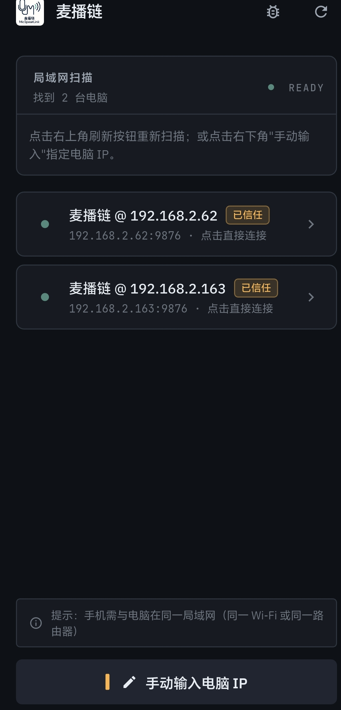
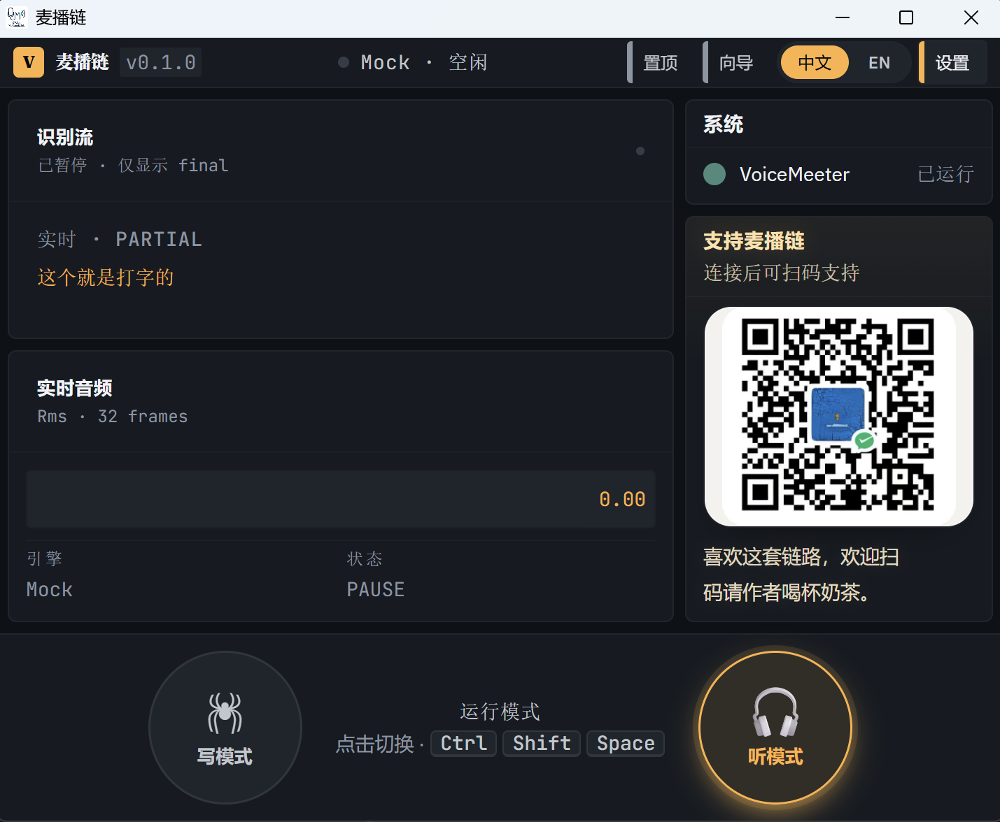
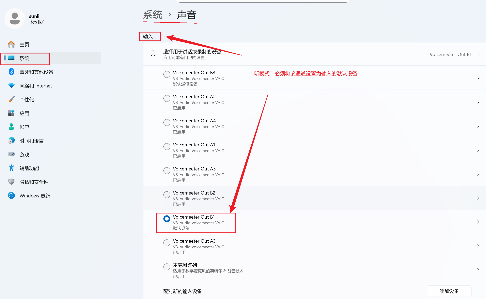
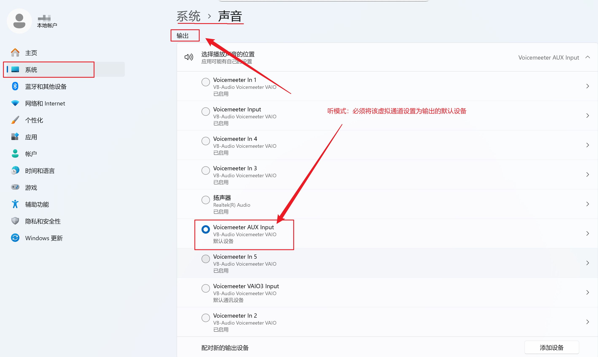
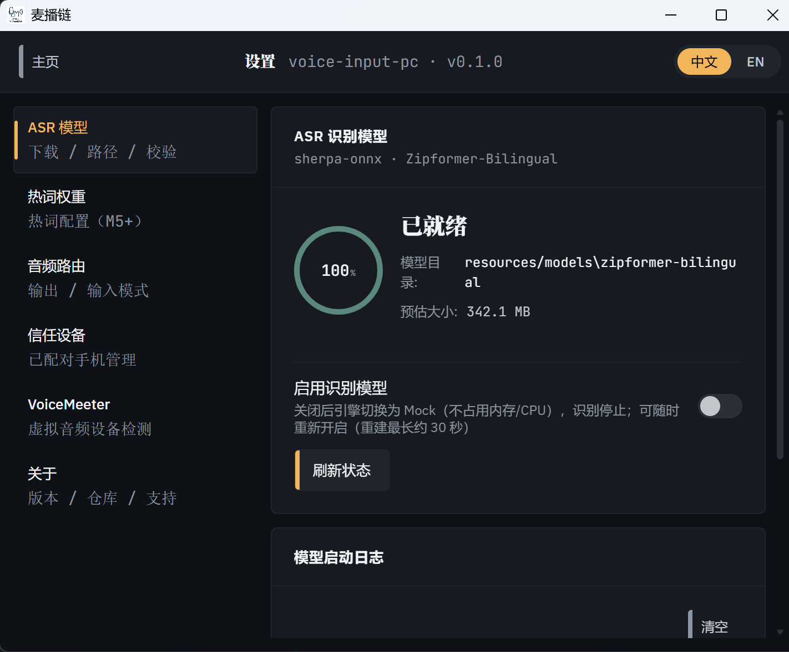

把你的 Android 手机变成 Windows 台式机的无线麦克风 + 无线扬声器，
同时附带本地 ASR 实时语音转写能力，全程局域网闭环，零云端上传。
麦播链（MicSpeakLink）是一套电脑端 + 手机端协同的局域网音频方案， 通过 WebRTC 在内网建立低延迟双向链路，再叠加本地 ASR 引擎实现语音转文字。 整个链路不依赖公网服务器，语音数据不离开你的局域网。

| 能力 | 说明 |
|---|---|
| 无线麦克风 | 手机麦克风 → WebRTC → PC 端使用 |
| 无线扬声器 | PC 系统音频 → VoiceMeeter → WebRTC → 手机扬声器 |
| 语音转文字 | 本地 Sherpa-ONNX 模型，结果直接写入光标处 |
| 局域网零依赖 | 同一 Wi-Fi 下自动发现、配对、传输，无需公网 |
| 托盘常驻 | 后台静默运行，全局快捷键切换模式 |
麦播链提供两个互斥的音频工作模式，由后端统一状态机裁决。 同一时刻只能启用其中一个，避免音轨冲突。
把手机麦克风采集的语音，实时转发到 PC 端做离线语音识别， 识别出的文字直接发送到当前桌面输入框的光标位置。
VoiceMeeter Input把 PC 端的系统播放音频通过 VoiceMeeter Banana 抓取， 经 WebRTC 下行到手机扬声器播放，让手机充当电脑的外放喇叭。
Voicemeeter AUX InputVoiceMeeter Input → B1 / Voicemeeter AUX Input → B2
模式互斥原则：写模式和听模式不能同时开启。
切换任何一个模式时，另一个会被后端自动停用。这种设计由 store.toggleListenMode() /
store.toggleListening() 统一裁决，避免 UI 与真实状态错位。
麦播链由两个端组成：Windows 电脑端负责系统集成与 ASR， Android 手机端负责拾音和外放。两端必须在同一局域网。

MicSpeakLink-Setup-v0.1.0.exe。该安装包已内置 ASR 模型、WebView2 离线运行时与 VoiceMeeter 协同安装逻辑。
%LOCALAPPDATA%\Programs\MicSpeakLink。
安装过程中如果检测到系统未安装 VoiceMeeter Banana，会自动弹出 VB-Audio 安装器，
等待 GUI 窗口关闭后安装器会复检注册表并自动路由。
统一下载入口：请前往麦播链的 GitHub 仓库
github.com/tengyuangangben/MicSpeakLink
的 Releases 页面，同时获取 PC 端安装包（.exe）与 Android 端安装包（.apk）。
Releases 页面会按版本号罗列每个版本的官方构建产物及校验信息，请勿从第三方渠道下载，以免被植入恶意代码。
MicSpeakLink-v0.1.0.apk 到手机本地存储。
可用手机浏览器打开仓库地址直接下载，也可先下载到电脑再通过 USB / 微信文件传输 / 网盘等方式拷贝到手机。

麦播链通过局域网自动发现 + 配对码认证建立手机与 PC 的 WebRTC 链路。 不是扫码，而是手机端手动输入 PC 端显示的 6 位数字配对码完成配对。

信任设备机制：首次配对成功后，手机会以加密形式把 device_token 存到本地。
下次打开 APP，已信任的 PC 会自动显示「已信任」标记，连接时跳过配对码输入步骤，
直接进入主页并默认开启写模式。
写模式需要 PC 端的 ASR 模型、Windows 默认输入设备、以及桌面输入焦点三者就绪。 以下按步骤完成配置。
%APPDATA%\com.micspeaklink.app\resources\models\zipformer-bilingual\
踩坑提示：正式发布的 PC 安装包必须带 --features asr 编译选项，
否则会退回 Mock 引擎 —— 模型开关亮着但实际不识别。
下载第三方构建版本时请确认是 官方 release。
写模式启动后，PC 端 ASR 会通过 WASAPI 共享模式读取名为
VoiceMeeter Input 的虚拟输入设备。
因此 Windows 默认输入设备必须指向它，否则 ASR 拿不到音频。
VoiceMeeter Input。
这一步把系统默认输入指向虚拟麦克风。

Ctrl+Shift+Space（可在设置页自定义）后，
写模式开关会切到「录制中」状态，手机麦克风采集的语音会被实时识别并下发到 PC 端，
片刻后文字就会直接出现在你刚才点击的输入框光标处。
再次按下同一快捷键即可停止录入。
快捷键推荐用法：每次需要录入文字时，
① 先用鼠标点击目标输入框（让焦点落在那里），
② 再按下 Ctrl+Shift+Space 开麦说话，
③ 讲完后再次按下同一快捷键（或自动停止），
识别出的文字就会插入到你当前所在的文本框。
切换到下一个输入框时重复 ①②③ 即可。
| 快捷键 | 动作 |
|---|---|
| Ctrl + Shift + Space | 开始 / 停止语音录入（写模式主快捷键） |
| Ctrl + Shift + L | 切换听模式（音频回传开 / 关） |
| Ctrl + Shift + W | 写模式开关（与首页 UI 同步） |
关于快捷键冲突：如果你安装了其他同样使用 Ctrl+Shift+Space 的软件，
可以在 PC 端设置页 → 快捷键中重新绑定或禁用。
快捷键需在麦播链 PC 端启动时生效。
听模式依赖 VoiceMeeter Banana 虚拟音频设备。 如果你的 PC 在安装麦播链时已经安装了 VoiceMeeter，可直接跳转第 5.2 节。
VoiceMeeter Banana 图标启动。
听模式启动时，麦播链会自动把 Windows 默认输出设备切换为
Voicemeeter AUX Input，以便 PC 的所有应用声音都进入虚拟链路。
你也可以手动按下面的方式切换。
Voicemeeter AUX Input。
完成后系统所有应用声音都会进入 VoiceMeeter 链路。

「默认输入」（VoiceMeeter Input，写模式使用）与
「默认输出」（Voicemeeter AUX Input，听模式使用）
都在 Windows 设置的同一个声音页面里管理。
所有相关配置都从此处进入，写模式需要切换输入设备、听模式需要切换输出设备时，都按下面方式打开：

重要提示：VoiceMeeter 未运行时，Voicemeeter AUX Input 与 VoiceMeeter Input
都不会出现在下拉框中。请先按 第 5.1 节 启动 VoiceMeeter 主窗口，再来此处切换。
麦播链会在听模式启动时调用 vm_remote.rs 自动配置 VoiceMeeter 路由，
固定为：
| 输入 | 输出总线 | 作用 |
|---|---|---|
| VoiceMeeter Input | B1 | 手机麦克风上行（写模式音频流） |
| Voicemeeter AUX Input | B2 | PC 系统音频下行（听模式音频流） |
自动化说明：上述路由由 Remote API 全自动写入， 不需要你手动在 VoiceMeeter GUI 里拖线。 如果你想保留自定义路由，可以在设置页关闭「自动路由」开关。
Voicemeeter AUX Input 并写入路由。
按出现频率整理了 15 个常见问题，每个问题都给出症状 / 原因 / 处理步骤三段式答案。
症状：双击安装包后立即弹出 UAC 提示被拒绝，或安装器直接退出。
原因：麦播链需要写注册表（mDNS 服务声明）、写入 VoiceMeeter 路由配置、注册全局快捷键，这些操作都要求管理员令牌。
处理：
症状：首页模型指示灯长时间红色或黄色。
原因：模型文件缺失、SHA256 校验失败、磁盘空间不足或网络受限。
处理：
%APPDATA%\com.micspeaklink.app\resources\models\zipformer-bilingual\ 目录有 1 个 encoder + 1 个 decoder + 1 个 joiner + 1 个 tokens.txt。症状：写模式开关亮起，手机端音量条跳动，但 PC 端没有任何文本输出。
原因：通常有以下几种 ——
VoiceMeeter Input。处理：
SherpaOnnx，如显示 Mock 请重新下载官方安装包。症状：听模式开关亮起，但手机无声。
原因：通常是 VoiceMeeter 没运行、Windows 默认输出没切、或 B2 总线被关闭。
处理：
AUX Input → B2 处于「开」状态。vm_remote 重新写入路由。症状：APP 扫描页面长时间转圈，没有出现电脑列表。
原因：两端不在同一局域网、或路由器禁止了 5353 / 9870 等端口的 mDNS 广播。
处理：
症状：手机端输入配对码后转圈超过 30 秒仍未连接。
原因：配对码已过期（默认 60s）、输入错误、或 PC 端 mDNS 服务异常。
处理：
症状：连接成功几秒到几十秒后自动断开，循环往复。
原因：路由器切换信道、手机省电策略杀进程、防火墙阻断 STUN/TURN。
处理：
症状：Windows 声音设置下拉框中没有 VoiceMeeter 设备。
原因：VoiceMeeter 没安装 / 安装后未重启 / 驱动未注册。
处理：
VB-Audio VoiceMeeter Input / Output。症状：从公司 Wi-Fi 回到家 Wi-Fi（或反之）后连接断开。
原因：IP 变化后 mDNS 缓存失效 + WebRTC ICE 重协商。
处理：
device_token 重新认证，无需重新输配对码。症状：识别的文字与原话有偏差。
原因：环境噪声、说话含糊、麦克风增益过低、口音与训练集差异。
处理：
症状：按下 Ctrl+Shift+W 没有反应。
原因：被其他软件占用、未授予后台快捷键权限、麦播链未启动。
处理：
答：不能。
麦播链的两个模式由统一状态机裁决，互斥运行。 切换其中一个，另一个会被后端自动停用。 这是设计约束，避免音轨冲突与 ASR / Loopback 抢占资源。
如果你既需要 ASR 又需要听到电脑声音，可：
症状：双击安装包后 Windows Defender / 火绒 / 360 立即删除或隔离。
原因：未签名的安装包被启发式引擎误判，或下载源不在信任列表。
处理：
docs/release/ 目录下载。症状：APP 切到后台 1~5 分钟后再回来，没有识别也没有声音。
原因：手机系统杀掉了麦克风 / 前台服务 / WebSocket。
处理：
症状：遇到无法解决的问题，需要排查或上报。
处理：
%APPDATA%\com.micspeaklink.app\logs\app.log.YYYY-MM-DD。Issues 页面，提供两端日志、复现步骤、系统版本、设备型号。| 用途 | 协议 / 端口 / 名称 | 说明 |
|---|---|---|
| mDNS 广播 | UDP 5353 / _micspeaklink._tcp.local | 局域网设备发现 |
| WebSocket 信令 | TCP 9870 | 建链阶段 SDP / ICE 交换 |
| WebRTC 音频 | UDP 动态端口 | 建链后 Opus 双向流 |
| 默认输入 | VoiceMeeter Input | 写模式的虚拟输入端点 |
| 默认输出 | Voicemeeter AUX Input | 听模式的虚拟输出端点 |